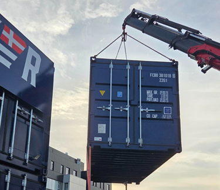

We are currently building a container-based 40 kW solid oxide electrolyzer (SOE) system within the Road2X project, funded by Innovation Fund Denmark Grand Solutions (Grant No. 3148-00033B).
This pilot-scale system is designed as a container-based platform to enable flexible and dynamic operation of solid oxide electrolysis technologies under realistic conditions.
With this system, we investigate dynamic operating strategies for improving the robustness of SOE systems, including:
